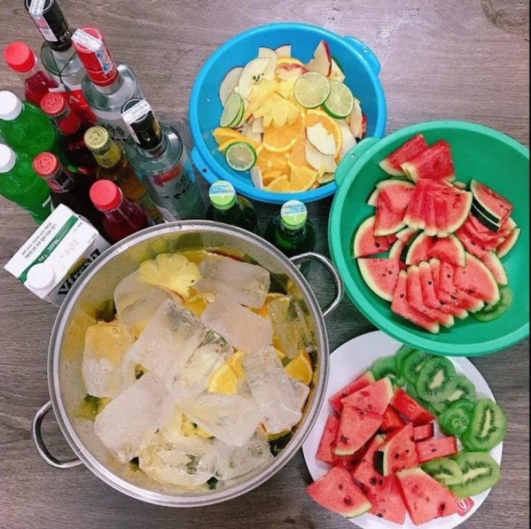
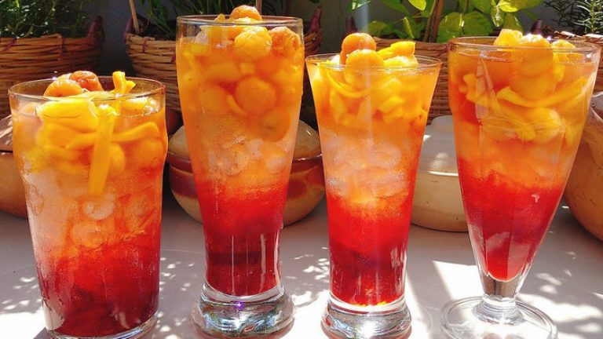
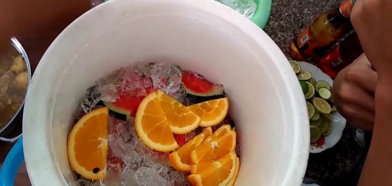
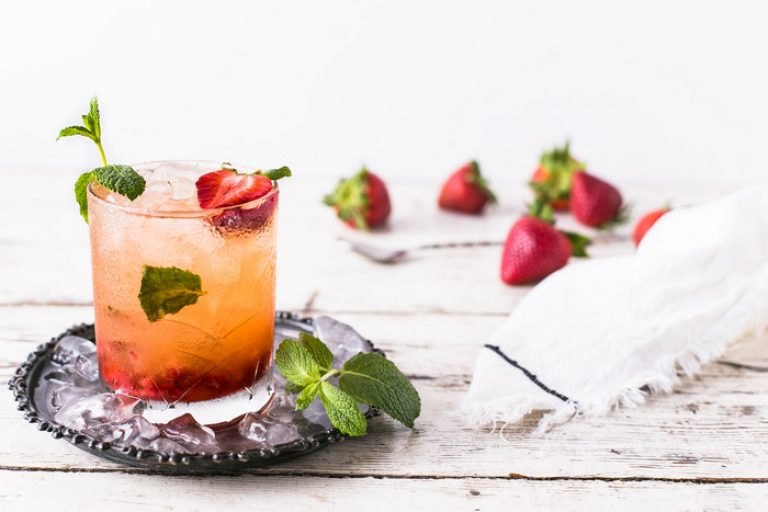
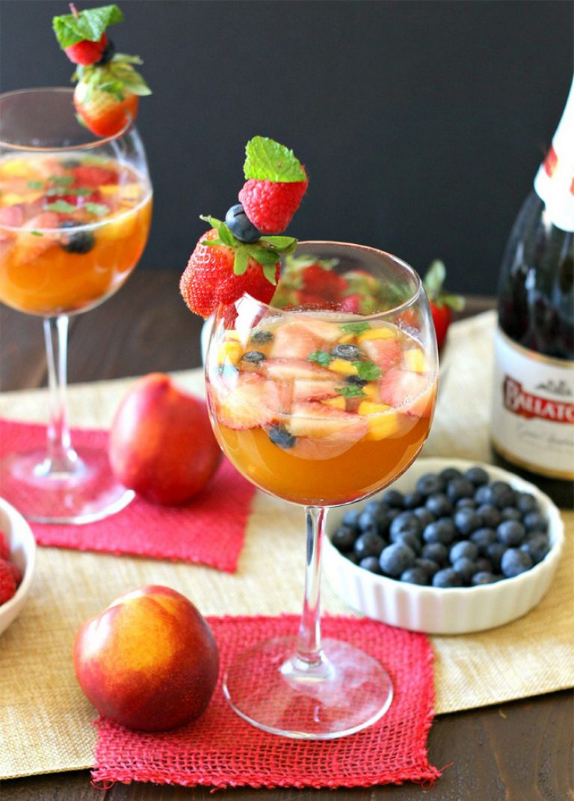

August 18, 2020 Thời gian :
Cách làm cocktail trái cây cần chuẩn bị những nguyên liệu gì?
Công thức cocktail trái cây thần sầu cực nóng sốt trong mùa hè này đã có tại Food Wiki. Vậy thì bạn hãy cùng chúng tôi cập nhật công thức này với những nguyên liệu rất dễ kiếm này nhé!
Nguyên liệu cơ bản của cách làm cocktail trái cây cần có như sau:
– Cam khoảng 4-5 trái
– Trái táo xanh khoảng 1-2 trái
– Chanh: 1 trái
– Khoảng 20 gram dâu tây
– Bia táo khoảng 70ml
– Nước ngọt có gas khoảng 40ml
– Bottle red wine khoảng 100ml
– Nước trái cây tùy thích
– Đá viên
Bên cạnh những nguyên liệu được gợi ý. Bạn có thể thêm các loại trái cây tùy theo mùa hoặc sở thích. Nếu bạn muốn điều chỉnh hương vị ngọt, chua. Đặc biệt, bạn cũng có thể thêm hoặc bớt trọng lượng các loại trái cây. Cũng cần lưu ý rằng nên chọn mua các sản phẩm trái cây còn tươi nhé. Đây chính là bí quyết để bạn có được món cocktail chuẩn vị, thanh mát nhé!
Bật mí cách làm cocktail hoa quả cực đã ngay tại nhà
Với khá nhiều nguyên liệu, nhiều người sẽ cho rằng hẳn pha chế cocktail không hề dễ. Tuy nhiên, thực tế cách làm cocktail trái cây lại rất đơn giản. Hãy cùng áp dụng ngay những hướng dẫn dưới đây nhé!
Tiến hành sơ chế nguyên liệu
Sau khi đã chọn mua đầy đủ các nguyên liệu. Vậy là, bạn có thể bắt tay ngay vào việc sơ chế. Các loại trái cây lần lượt như sau:
Chi tiết cách làm cocktail trái cây
Cách làm cocktail này cần sử dụng một ly thủy tinh cỡ bự hoặc một chậu sạch lớn để pha chế.
Đầu tiên, bạn tiến hành trải một lớp đá vào đấy thủng, chậu hoặc ly to. Sau đó bạn tiếp tục trải lần lượt các loại trái cây theo từng lớp. Ở lớp trên cùng bạn trải tiếp một lớp đá viên để giữ được độ lạnh tươi mát cho trái cây. Cuối cùng, hãy tiếp tục đổ các loại nước: bia táo, rượu vang, nước ngọt có gas, nước trái cây vào chậu.
Ly cocktail hoa quả đã hoàn thành rồi đấy!
Ly cocktail trái cây được pha chế theo công thức không thể đơn giản hơn! Khi uống bạn chỉ cần khuấy đều và rót ra ly thưởng thức. Bên cạnh đó, bạn có thể trang trí thêm cùng với các lát mỏng trái cây, lá bạc hà để tạo được ly cocktail đẹp mắt.
Cách làm cocktail với hoa quả cần lưu ý gì?
Một ly cocktail có cách làm thực sự rất đơn giản và không quá khó để thực hiện. Mùa hè là thời điểm có rất nhiều loại trái cây nở rộ. Hơn nữa, bạn có thể chọn lựa thoải mái những nguyên liệu theo ý thích để có được ly cocktail tươi mát. Cách làm cocktail trái cây cũng nên lưu ý một số điều sau:
– Tốt nhất bạn nên hạn chế sử dụng các loại trái cây có thể tan hoặc có tính chất nhờn như sầu riêng, chuối, bơ…
– Bên cạnh đó, khi kết hợp các loại rượu hoặc nước trái cây cần chú ý đến màu sắc. Điều này sẽ giúp bạn có được màu sắc của ly cocktail đẹp mắt.
– Hương vị cocktail trái cây sau khi pha chế chỉ nên sử dụng trong vòng 24h, không nên sử dụng qua đêm. Bởi vì khi qua đêm, hương vị cocktail sẽ lên men, khó uống.
– Nếu muốn tăng thêm phần hấp dẫn về mùi vị cho ly cocktail. Vậy thì các bạn có thể kết hợp với các loại thảo mộc như: quế, lá basil…
Có thể thấy, cách pha chế cocktail trái cây không hề khó. Chính vì vậy, hi vọng rằng với cách làm cocktail trái cây được giới thiệu trên đây sẽ cho bạn gợi ý về thức uống giải nhiệt cho mùa hè. Hãy thử vào bếp ngay hôm nay và trổ tài pha chế cocktail mới lạ chiêu đãi người thân nhé! Chắc chắn rằng hương vị Cocktail này sẽ khiến ai thưởng thức cũng thích mê đấy nhé!